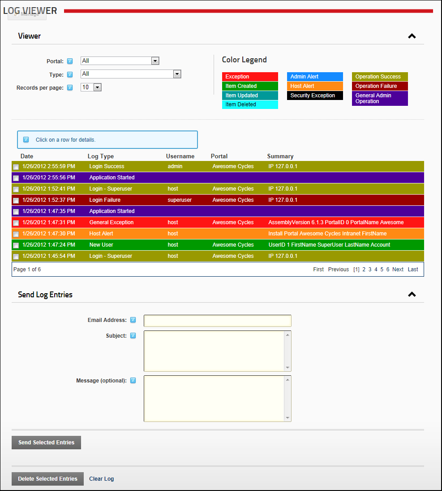

The Event Viewer page displays the Log Viewer module that provides an historical log of database events such as events which are scheduled, exceptions, account logins, module and page changes, user account activities, security role activities, etc. Authorized users can send exceptions to any email address. SuperUsers can add, edit and delete event records for all sites.
The Log Viewer module is pre-installed on the Admin >  Event Viewer page and can be deployed to sites and be added to site pages.
Event Viewer page and can be deployed to sites and be added to site pages.

The Log Viewer Module as displayed to SuperUsers